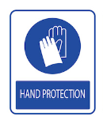
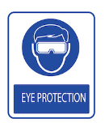
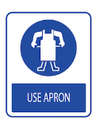
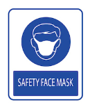
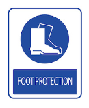

Overview
Design Brief
The task is to conceptualise, design and build a propeller powered small scale dragster using sustainable and recycled materials. The dragster must use a propeller (no more than 200mm in diameter) that will be made from aluminium drink cans. It will be powered by a 3V electric motor. The car's chassis and structure will be made from sustainable and recycled materials. The goal is to make the car move 3 meters in at least 5 seconds.
Criteria for Success
Gantt Chart
Click
here to view the Gantt Chart
Work Health Safety
WHS measures are put in place in order to prevent injury and reduce the risk of accidents when working with and around tools. Some key WHS measures used throughout this project are foot protection incase of something being dropped, hand protection to protect against slippage or accidents when handling tools such as knives or soldering irons and aprons to protect the torso from burns or cuts. Below is a risk assessment for all tools used during the construction of the dragster.
| Risk | Signage | Safety Measures |
|---|---|---|
| Hot Glue Gun |    |
The nozzle and glue of the hot glue gun both reach
dangerously high temperatures, therefore these safety measures are needed to create a safe
environment: Hand protection is required to prevent burns. A safety face mask is needed to prevent the inhalation of toxic burning plastic fumes. An apron should be worn to prevent hot glue or surfaces burning the user. |
| Soldering Iron |  |
A soldering iron creates an extremely hot point that can
burn or cause the user extreme pain. In order to prevent injury these safety measures must be put in
place: Hand protection is required to prevent soldering iron burns. A safety face mask is needed to prevent the inhalation fumes produced by the burning of flux or plastic. An apron should be worn to prevent the hot end causing damage if dropped or mishandled. |
| Hammer |  |
A hammerhead has a large amount of force and inertia
applied to it meaning if any part of a person is stuck by it serious injury could occur. Safety measures
put in place to prevent injury consist of: Hand protection to protect the hands and fingers of the user incase of an accident. Foot protection to protect the foot of the user incase of an accident or dropping the hammer. |
| Box Cutter | A box cutter is made up of a series of razor sharp blades,
these blades can be extremely dangerous if used incorrectly or without protection which is why it is
necessary to always use: Hand protection to protect the users fingers and hand in the case of an accident. Foot protection is used to protect the foot of the user incase of an accident or the user dropping the cutter while the blade is still extended. |